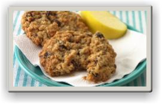

Raisin
Ingredients
2/3 cup granulated sugar
2/3 cup packed brown sugar
1/2 cup butter or margarine, softened
1/2 cup shortening
1 teaspoon baking soda
1 teaspoon ground cinnamon
1 teaspoon vanilla
1/2 teaspoon baking powder
1/2 teaspoon salt
2 eggs
3 cups quick-cooking or old-fashioned oats
1 cup Gold Medal™ all-purpose flour
1 cup raisins, chopped nuts or semisweet chocolate chips, if desired
Directions
1 Heat oven to 375°F. In large bowl, beat all ingredients except oats, flour and raisins with electric mixer on medium speed, or mix with spoon. Stir in oats, flour and raisins.
2 On ungreased cookie sheet, drop dough by rounded tablespoonfuls about 2 inches apart.
3 Bake 9 to 11 minutes or until light brown. Immediately remove from sheet to cooling rack.
